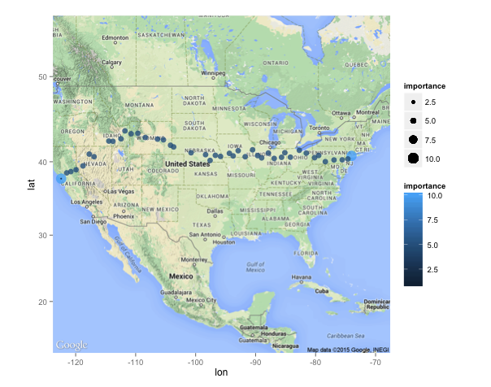

Yelp, httr and a Romantic Trip Across the United States, One Florist at a Time
Practical walkthroughs on machine learning, data exploration and finding insight.

Resources
Packages Used in this Walkthrough
- {httr} - Tools for Working with URLs and HTTP
- {jsonlite} - Robust, High Performance JSON Parser and Generator for R
- {ggplot2} - Implementation of the Grammar of Graphics
- {ggmap} - Spatial visualization with Google Maps and OpenStreetMap
Just in time for Valentine’s Day, if you happen to be planning a trip across the United States and want to offer your companion a rose at every degree of latitude traveled, then this walkthrough is for you! The title says it all, we’re going to use the Yelp API to cross the United States from San Francisco, CA to New York City, NY, and be 60 miles from a florist at all times.
This walkthrough has two parts, first exploring the basics of Yelp and httr, and finally looking at a mapping script to hop from florist to florist across the country. The itinerary will be plotted on ggmap. If all you need is to pull locations via Yelp, then the first part is all you need.
Part 1: Yelp and httr
We’ll look at two different ways of using the Yelp Search API. For either of them, you will need to sign up for a free Yelp account and request API keys.
The simplest and probably most common way of using the API, is to request a term for a specific city or address. This is what the URL would look like for the term food around San Franciso:
http://api.yelp.com/v2/search?term=food&location=San+Francisco
Unfortunately, its a bit more complicated than simply dropping that in a browser. To authenticate (i.e. be recognized as a registered user), Yelp uses OAuth v1.0a protocol.
This is a cleaver of way authenticating you without exposing your account or password. On a very high level, it is done with a two-step process, first we ask Yelp for a signature key through a GET command, then we use that returned temporary key to retrieve our locations. Check out Yelp’s authentication docs for more details.
This is a lot of work to do manually, but the handy httr package from Hadley Wickham handles a lot of the authentication details automatically. It’s a really cool package as it can ‘shake hands’ with many HTTP API’s (Twitter, Facebook, Linkedin, Google, etc).
After you get your keys from Yelp, swap them for the x’s in the code below:
consumerKey = "xxxx"
consumerSecret = "xxxx"
token = "xxxx"
tokenSecret = "xxxx"
Load up the httr library and call the oauth_app function passing it a name tag (can be anything you want), and your consumer credentials. Next call up the sign_oauth1.0, pass it the myapp object along with your token credentials:
require(httr)
myApp <- oauth_app("YELP", key=consumerKey, secret=consumerSecret)
mySignature <- sign_oauth1.0(myApp, token=token, token_secret=tokenSecret)
** Searching by Locations**
Your signature is ready to be used on a Yelp search query:
yelpURL <- paste0("http://api.yelp.com/v2/search/?limit=3&term=food&location=San%20Francisco")
locationData <- GET(yelpURL, mySignature)
That is it! We entered the term food in San Francisco and asked to limit it to 3 result. Let’s use the JSON parser, jsonlite to extract the results the results:
require(jsonlite)
locationDataContent = content(locationData)
locationList=jsonlite::fromJSON(toJSON(locationDataContent))
results <- data.frame(locationList)
results$businesses.name
## [[1]]
## [1] "Ike's Place"
##
## [[2]]
## [1] "The Italian Homemade Company"
##
## [[3]]
## [1] "The Codmother Fish and Chips"
results$businesses.name returned 3 businesses, but offers a whole lot more:
names(results)
## [1] "region.span.latitude_delta" "region.span.longitude_delta"
## [3] "region.center.latitude" "region.center.longitude"
## [5] "total" "businesses.is_claimed"
## [7] "businesses.rating" "businesses.mobile_url"
## [9] "businesses.rating_img_url" "businesses.review_count"
## [11] "businesses.name" "businesses.snippet_image_url"
## [13] "businesses.rating_img_url_small" "businesses.url"
## [15] "businesses.menu_date_updated" "businesses.phone"
## [17] "businesses.snippet_text" "businesses.image_url"
## [19] "businesses.categories" "businesses.display_phone"
## [21] "businesses.rating_img_url_large" "businesses.menu_provider"
## [23] "businesses.id" "businesses.is_closed"
## [25] "businesses.location"
Obviously, the terms food and San Francisco are way too vague, but you get the idea. Next we’ll search by geo-spatial coordinates.
** Searching by Geo-Spatial Coordinates**
This is very close to what we did above except we specify the location down to the latitude and longitude of the desired area. How about 3 bars by Montgomery and Market Streets in San Francisco:
yelpURL <- paste0("http://api.yelp.com/v2/search/?limit=3&ll=37.788022,-122.399797&term=bar")
locationData <- GET(yelpURL, mySignature)
require(jsonlite)
locationDataContent = content(locationData)
locationList=jsonlite::fromJSON(toJSON(locationDataContent))
results <- data.frame(locationList)
results$businesses.name
## [[1]]
## [1] "83 Proof"
##
## [[2]]
## [1] "Topsy's Fun House"
##
## [[3]]
## [1] "Rickhouse"
The difference is syntactical, instead of building the URL with location, we do it with ll. We’ll use a third way of pulling locations in part 2 - geo-spatial bounded boxes. That’s it for part 1.
Part 2: Hoping from Florist to Florist Across the United States
Let me tell you, this was a blast to design and build! I’ll go over the pertinent parts but if you want to see this in action yourself, copy the code at the end of the walkthrough and replace the Yelp credentials with yours and you’re good to go!
Though not a full-proof application (matter of fact it can only travel west to east), it will take a departure and destination set of latitudes and longitudes, a search term and attempt to link both points with a path using your search term every 60 miles (approximately 1 geo-coordinate degree). Here, we will go from San Francisco, CA to New York City, NY, florist by florist.
ggmap has a handy function called geocode. You can give it addresses, zip codes, even famous monuments, and it will return latitude and longitude coordinates.
require(ggplot2)
require(ggmap)
startingpoint <- geocode(c("Fishersman's Wharf, San Francisco, CA"))
print(startingpoint)
## lon lat
## 1 -122.4 37.81
endingpoint <- geocode(c("Chelsea Piers, NY"))
print(endingpoint)
## lon lat
## 1 -74.01 40.75
Now that we know our starting and ending points, let’s start our first point manually then generalize the tasks through functions.
We’ll use ggmap to import a map of the United States from Google (see Mapping The United States Census With {ggmap} for more details on ggmap). ggplot2 accepts a data frame, let’s make one with our start and end points and see the journey that lies ahead. We’ll assign them large sizes to differentiate them from the traveling points:
latitudes <- c(startingpoint$lat, endingpoint$lat)
longitudes <- c(startingpoint$lon, endingpoint$lon)
objdf <- data.frame('latitude'=latitudes,
'longitude'=longitudes,
'size'=c(10,10),
'color'=c('red','red'))
# get a Google map
map<-get_map(location='united states', zoom=4, maptype = "terrain",
source='google',color='color')
objMap <- ggmap(map) + geom_point(
aes(x=longitude, y=latitude, size=size,
show_guide = TRUE, colour = color),
data=objdf, alpha=.8, na.rm = T)
# call the objMap object to see the plot
objMap

I will keep the details short on the next few functions. MapIt takes geo-spatial coordinates, a size, and the ggmap object. The function will return the ggmap object and we need to always pass the same ggmap back if we want to update and track the journey’s history.
MapIt <- function(latitude, longitude, size, objggmap) {
objdf <- data.frame('latitude'=latitude,
'longitude'=longitude,
'tsize'=size)
# add new point to ggmap
require("ggplot2")
require("ggmap")
objggmap <- objggmap + geom_point(
aes(x=longitude, y=latitude, size=tsize,
show_guide = TRUE),
data=objdf, alpha=.8, na.rm = T)
return (objggmap)
GetBestYelpLocation, as its name implies, takes a vector of two sets of geo-spatial coordinates, the upper left point and the lower right one, along with the search term and sends it to Yelp. It returns a data frame with the name, city, rating, state, latitude and longitude of the top location using the search term.
GetBestYelpLocation <- function(boundedcoordinates, term) {
limit <- 1
YelpUrl <- paste0("http://api.yelp.com/v2/search/?limit=20&bounds=",
boundedcoordinates[1],",",boundedcoordinates[2],
"|",boundedcoordinates[3],",",boundedcoordinates[4],"&term=",term)
locationdata=GET(YelpUrl, mySignature)
listMembersContent = content(locationdata)
listMembers=jsonlite::fromJSON(toJSON(listMembersContent))
yelpResults = tryCatch({
data.frame(listMembers)
}, error = function(e) {
NULL
})
if (!is.null(yelpResults)) {
set1 <- data.frame("name"=yelpResults$businesses.name,
'city'=yelpResults$businesses.location$city,
'rating'=yelpResults$businesses.rating,
'latitude'=yelpResults$businesses.location$coordinate$latitude,
'longitude'=yelpResults$businesses.location$coordinate$longitude,
'state'=yelpResults$businesses.location$state_code)
for (ind in seq(1:nrow(set1))) {
if ((set1$latitude[ind] <= boundedcoordinates[1]) &
(set1$latitude[ind] >= boundedcoordinates[3]) &
(set1$longitude[ind] >= boundedcoordinates[2]) &
(set1$longitude[ind] <= boundedcoordinates[4]))
return(set1[ind,])
}
}
return(NULL)
}
GetPossibleCoordinates takes the current position of our traveler and calculates its bounded box. The default bounded box unit is 1 degree (equates loosely around 60 miles), so we add 30 miles in all four directions from the current point to created the bounded square (making it a 1x1 degree box, or 60x60 miles box).

It returns the next two possible moves, both forward but one higher and one lower (see image below).
GetPossibleCoordinates<-function(lat, lon, area=1) {
# this is hard to keep track but each location's next move
# equates attempting to move forward one square, the same area
# as the previous one but half-way above and half-way below the
# previous one.
halfarea <- area/2
# new forward top square area
topArea_upperleft_latitude <- lat+area
topArea_upperleft_longitude <- lon+halfarea
topArea_lowerright_latitude <- lat
topArea_lowerright_longitude <- lon+(halfarea+area)
# new forward bottom square area
bottomArea_upperleft_latitude <- lat
bottomArea_upperleft_longitude <- lon+halfarea
bottomArea_lowerright_latitude <- lat-area
bottomArea_lowerright_longitude <- lon+(halfarea+area)
rownames <- c('new_top_area','new_bottom_area')
latitude_point1 <- c(topArea_upperleft_latitude, bottomArea_upperleft_latitude)
longitude_point1 <- c(topArea_upperleft_longitude, bottomArea_upperleft_longitude)
latitude_point2 <- c(topArea_lowerright_latitude, bottomArea_lowerright_latitude)
longitude_point2 <- c(topArea_lowerright_longitude, bottomArea_lowerright_longitude)
return (data.frame('direction'=rownames,
'latitude_point1'=latitude_point1,
'longitude_point1'=longitude_point1,
'latitude_point2'=latitude_point2,
'longitude_point2'=longitude_point2))
}
Finally, MakeAMove is the central relay that communicates with the other functions. It will get the next coordinates via GetPossibleCoordinates, figure out if it should try up or down first depending on where it is in relation to the end point’s latitude, and call on the Yelp API. If it finds a florist, it will report back the pertinent information such as the florist’s name, state, and coordinates. If it can’t find one, it will report so by returning NULL.
MakeAMove <- function(lat,lon,sizebox, searchTerm, lat_endPoint) {
possibleCoordinates <- GetPossibleCoordinates(lat,lon,sizebox)
# go up or down first depending on latitude of end point
searchOrder <- c('new_top_area','new_bottom_area')
if (lat > lat_endPoint)
searchOrder <- c('new_bottom_area','new_top_area')
for (directiontogo in searchOrder) {
coords <- possibleCoordinates[possibleCoordinates$direction==directiontogo,]
print(paste('Scanning',directiontogo, 'for', searchTerm,'...'))
foundLocation <- GetBestYelpLocation(as.numeric(as.vector(coords[2:5])), searchTerm)
if (!is.null(foundLocation))
return (foundLocation)
}
return (NULL)
}
Let’s finally look at the main logic. Here we set a search term florist, and a bounded square size unit, 1 degree in this case. madeIt is the boolean flag that keeps the while loop going until we make it close to our final destination (or if we fail after 100 tries). Sys.sleep(0.5) will pause the code between each loop, this is critical so you don’t flood the Yelp server and get yourself banned.
searchTerm <- 'florist'
squareSize <- 1 # setting the bounded area to a square
# start trip info vectors - we need to remember where we've been!
currentLatitude <- startingpoint$lat
currentLongitude <- startingpoint$lon
# let ggmap keep track of where we've been
objMap <- MapIt(currentLatitude, currentLongitude, 1, objMap)
madeIt=FALSE
safetyCount <- 0
foundCount <- 0
while(madeIt == FALSE) {
safetyCount <- safetyCount + 1
foundLocation <- MakeAMove(lat=currentLatitude,
lon=currentLongitude,
sizebox=squareSize,
searchTerm=searchTerm,
endingpoint$lat)
if (!is.null(foundLocation)) {
print (paste('Our new',searchTerm, 'is', foundLocation$name, 'in',
foundLocation$city, foundLocation$state,
'with a', foundLocation$rating, 'start rating'))
currentLatitude <- foundLocation$latitude
currentLongitude <- foundLocation$longitude
# reset temporary setting
squareSize <- 1
# let ggmap keep track of where we've been
objMap <- MapIt(currentLatitude, currentLongitude, squareSize+3, objMap)
# let's keep track how our successes!
foundCount <- foundCount + 1
} else {
# increase squareSize
print(paste("Can't find any", searchTerm,", enlarging square search area to",squareSize + 1))
# temporary settings to get us out of desert
squareSize <- squareSize + 1
}
# have we arrived at our end point
if ((currentLongitude < (endingpoint$lon + squareSize))
& (currentLongitude > (endingpoint$lon - squareSize)))
{
print(paste('We made it!! It took',foundCount,'hops...'))
break
}
if (safetyCount > 100)
{
print(paste('Giving up!! Failed after',foundCount,'hops'))
break
}
# be considerate with your Yelp requests
Sys.sleep(0.5)
}
This is the output you will see when you run the code. It will log each point traveled and print the name of the florist. In case it cannot find one in either the upper or lower forward areas, the system will increase the square size by a degree (making it a 2x2 box instead of a 1x1 box) until it can find a florist. This is why in the final map below you will see gaps in deserted or mountainous zones.
## [1] "Scanning new_top_area for florist ..."
## [1] 40.46699 -118.28123 39.46699 -117.28123
## [1] "Scanning new_bottom_area for florist ..."
## [1] 39.46699 -118.28123 38.46699 -117.28123
## [1] "Can't find any florist , enlarging square search area to 2"
## [1] "Scanning new_top_area for florist ..."
## [1] 41.46699 -117.78123 39.46699 -115.78123
## [1] "Our new florist is Second Street Seasonals in Winnemucca NV with a 4 start rating"
...
## [1] "Our new florist is Achin' Back Garden Center in Pottstown PA with a 4.5 start rating"
## [1] "Scanning new_top_area for florist ..."
## [1] 41.24341 -75.06065 40.24341 -74.06065
## [1] "Our new florist is Monday Morning Flower and Balloon Co. in Princeton NJ with a 4.5 start rating"
## [1] "We made it!! It took 41 hops..."

Conclusion
So, I didn’t quite deliver on my promise of being within 60 miles of a florist at all times, it may or may not be possible (and we certainly won’t find out with the state of my current code). Yet, we managed to be within those parameters during most of the journey. You can try with with different terms, different locations, even upgrade the algorithm to do cooler things - just don’t abuse the API as it may end the party for all of us.
A special thanks to Nathan Yau; this walkthrough was loosely based but strongly inspired by his In search of food deserts.
Full source code (also on GitHub):
######################## functions ################################
MapIt <- function(latitude, longitude, size, objggmap) {
objdf <- data.frame('latitude'=latitude,
'longitude'=longitude,
'tsize'=size)
# add new point to ggmap
require("ggplot2")
require("ggmap")
objggmap <- objggmap + geom_point(
aes(x=longitude, y=latitude, size=tsize,
show_guide = TRUE),
data=objdf, alpha=.8, na.rm = T)
return (objggmap)
}
# yelp rest API call
GetBestYelpLocation <- function(boundedcoordinates, term) {
limit <- 1
print(boundedcoordinates)
# Pick first florist in San Francisco, CA
#YelpUrl <- paste0("http://api.yelp.com/v2/search/?limit=",limit,
# "&location=San%20Francisco%20CA&term=florist")
# or 10 bars by geo-coordinates
#YelpUrl <- paste0("http://api.yelp.com/v2/search/?limit=",
# limit,"&ll=",latitude,",",longitude,"&term=florist")
# or by bounded geo-spatial coordinates
YelpUrl <- paste0("http://api.yelp.com/v2/search/?limit=20&bounds=",
boundedcoordinates[1],",",boundedcoordinates[2],
"|",boundedcoordinates[3],",",boundedcoordinates[4],"&term=",term)
locationdata=GET(YelpUrl, mySignature)
listMembersContent = content(locationdata)
listMembers=jsonlite::fromJSON(toJSON(listMembersContent))
yelpResults = tryCatch({
data.frame(listMembers)
}, error = function(e) {
NULL
})
if (!is.null(yelpResults)) {
set1 <- data.frame("name"=yelpResults$businesses.name,'city'=yelpResults$businesses.location$city,
'rating'=yelpResults$businesses.rating,
'latitude'=yelpResults$businesses.location$coordinate$latitude,
'longitude'=yelpResults$businesses.location$coordinate$longitude,
'state'=yelpResults$businesses.location$state_code)
for (ind in seq(1:nrow(set1))) {
if ((set1$latitude[ind] <= boundedcoordinates[1]) &
(set1$latitude[ind] >= boundedcoordinates[3]) &
(set1$longitude[ind] >= boundedcoordinates[2]) &
(set1$longitude[ind] <= boundedcoordinates[4]))
return(set1[ind,])
}
}
return(NULL)
}
# Movement controls
GetPossibleCoordinates<-function(lat, lon, area=1) {
# this is hard to keep track but each location's next move
# equates attempting to move forward one square, the same area
# as the previous one but half-way above and half-way below the
# previous one.
halfarea <- area/2
# new forward top square area
topArea_upperleft_latitude <- lat+area
topArea_upperleft_longitude <- lon+halfarea
topArea_lowerright_latitude <- lat
topArea_lowerright_longitude <- lon+(halfarea+area)
# new forward bottom square area
bottomArea_upperleft_latitude <- lat
bottomArea_upperleft_longitude <- lon+halfarea
bottomArea_lowerright_latitude <- lat-area
bottomArea_lowerright_longitude <- lon+(halfarea+area)
rownames <- c('new_top_area','new_bottom_area')
latitude_point1 <- c(topArea_upperleft_latitude, bottomArea_upperleft_latitude)
longitude_point1 <- c(topArea_upperleft_longitude, bottomArea_upperleft_longitude)
latitude_point2 <- c(topArea_lowerright_latitude, bottomArea_lowerright_latitude)
longitude_point2 <- c(topArea_lowerright_longitude, bottomArea_lowerright_longitude)
return (data.frame('direction'=rownames,
'latitude_point1'=latitude_point1,
'longitude_point1'=longitude_point1,
'latitude_point2'=latitude_point2,
'longitude_point2'=longitude_point2))
}
MakeAMove <- function(lat,lon,sizebox, searchTerm, lat_endPoint) {
possibleCoordinates <- GetPossibleCoordinates(lat,lon,sizebox)
# go up or down first depending on latitude of end point
searchOrder <- c('new_top_area','new_bottom_area')
if (lat > lat_endPoint)
searchOrder <- c('new_bottom_area','new_top_area')
for (directiontogo in searchOrder) {
coords <- possibleCoordinates[possibleCoordinates$direction==directiontogo,]
print(paste('Scanning',directiontogo, 'for', searchTerm,'...'))
foundLocation <- GetBestYelpLocation(as.numeric(as.vector(coords[2:5])), searchTerm)
if (!is.null(foundLocation))
return (foundLocation)
}
return (NULL)
}
############################## YELP SETUP ###############################
# yelp credentials
consumerKey = "xxxxx"
consumerSecret = "xxxxx"
token = "xxxxx"
tokenSecret = "xxxxx"
require(httr)
require(jsonlite)
# authorization
myapp = oauth_app("Yelp", key=consumerKey, secret=consumerSecret)
mySignature=sign_oauth1.0(myapp, token=token,token_secret=tokenSecret)
############################### Manual Code ###############################
require(ggplot2)
require(ggmap)
# Get our starting and ending points
# Fisherman's Wharf, San Francisco, CA 94109
startingpoint <- geocode(c("Fishersman's Wharf, San Francisco, CA"))
# Chelsea Piers 10011
endingpoint <- geocode(c("Chelsea Piers, NY"))
# ggplots accepts a data frame, let's make with with start and end points
latitudes <- c(startingpoint$lat, endingpoint$lat)
longitudes <- c(startingpoint$lon, endingpoint$lon)
# importance holds the size and color (we'll leave it up to ggplot to choose)
objdf <- data.frame('latitude'=latitudes,
'longitude'=longitudes,
'importance'=c(10,10))
# sample ggplot/ggmap with start and end locations
# get a Google map
require(ggmap)
map<-get_map(location='united states', zoom=4, maptype = "terrain",
source='google',color='color')
# plot it with ggplot2
require("ggplot2")
objMap <- NULL
objMap <- ggmap(map) + geom_point(
aes(x=longitude, y=latitude, size=importance,
show_guide = TRUE, colour = importance),
data=objdf, alpha=.8, na.rm = T)
################################### Logic #####################################
searchTerm <- 'florist'
squareSize <- 1 # setting the bounded area to a square
# start trip info vectors - we need to remember where we've been!
currentLatitude <- startingpoint$lat
currentLongitude <- startingpoint$lon
# let ggmap keep track of where we've been
objMap <- MapIt(currentLatitude, currentLongitude, 1, objMap)
madeIt=FALSE
safetyCount <- 0
foundCount <- 0
while(madeIt == FALSE) {
safetyCount <- safetyCount + 1
foundLocation <- MakeAMove(lat=currentLatitude,
lon=currentLongitude,
sizebox=squareSize,
searchTerm=searchTerm,
endingpoint$lat)
if (!is.null(foundLocation)) {
print (paste('Our new',searchTerm, 'is', foundLocation$name, 'in',
foundLocation$city, foundLocation$state,
'with a', foundLocation$rating, 'start rating'))
currentLatitude <- foundLocation$latitude
currentLongitude <- foundLocation$longitude
# reset temporary setting
squareSize <- 1
# let ggmap keep track of where we've been
objMap <- MapIt(currentLatitude, currentLongitude, squareSize+3, objMap)
# let's keep track how our successes!
foundCount <- foundCount + 1
} else {
# increase squareSize
print(paste("Can't find any", searchTerm,", enlarging square search area to",squareSize + 1))
# temporary settings to get us out of desert
squareSize <- squareSize + 1
}
# have we arrived at our end point
if ((currentLongitude < (endingpoint$lon + squareSize))
& (currentLongitude > (endingpoint$lon - squareSize)))
{
print(paste('We made it!! It took',foundCount,'hops...'))
break
}
if (safetyCount > 100)
{
print(paste('Giving up!! Failed after',foundCount,'hops'))
break
}
# be considerate with your Yelp requests
Sys.sleep(0.5)
}
objMap